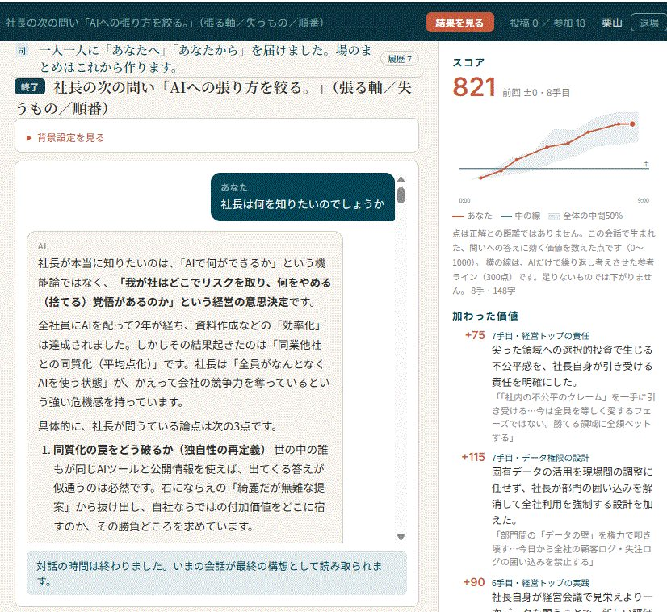
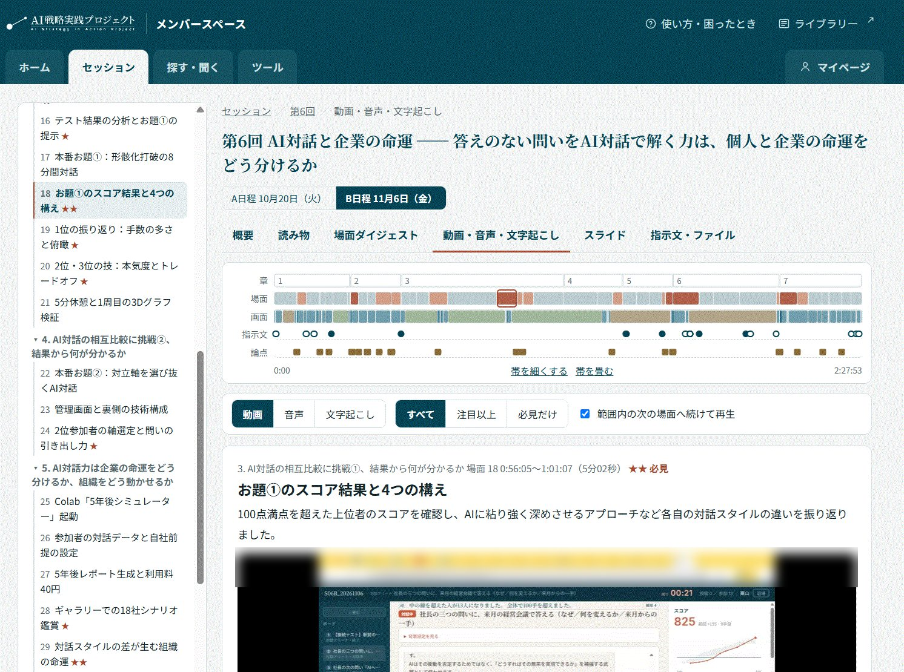

いちばん多かった声
手元で動かして、AIに何ができるかを体感できた
「説明を聞くだけでなく、 手元で 実際に AIを 動かして、 何が できるかを 体感できた。 「こんな ことまで できるのか」と 驚いた。」
多かった立場仕事で
AIを


主催 栗山 実マッキンゼー出身。大手企業へのAI戦略助言、AI関連スタートアップの共同創業、AI技術開発などを歴任。グロービス経営大学院 教員、多摩大学経営大学院 特任教授。
※ 97%は、2026年5月〜10月の各回の参加者アンケート（延べ133件）で「参加・視聴して良かった」に「とてもそう思う」「ややそう思う」と回答した割合。
11月の回AI駆動開発と企業戦略（第7回）
システムを作るコストと時間が急激に圧縮された今、戦略と価値創造の主戦場はどこへ移るか。
A日程とB日程は同じ内容です。都合のよい日程にご参加ください。
12月の回テーマは決まりしだいお知らせします（第8回）
A日程とB日程は同じ内容です。都合のよい日程にご参加ください。
2027年1月の回テーマは決まりしだいお知らせします（第9回）
A日程とB日程は同じ内容です。都合のよい日程にご参加ください。
2027年2月の回テーマは決まりしだいお知らせします（第10回）
A日程とB日程は同じ内容です。都合のよい日程にご参加ください。
次の開催日は、決まりしだいお知らせします。
生成AIの普及で「ツールとして便利に使う」用途は急速に広がっています。本プロジェクトが狙うのはその先——AIを前提に、事業戦略そのものを構想し、実装するへの転換です。
1990年代、世界を変えたのは「インターネットの使い方講座」ではなく、ネット前提で作られたAmazonやNetflixのようなサービスでした。同じ問いに、いま私たちはAIで直面しています。
抽象論で終わらせません。毎回みずから手を動かし、動くものを作り、その戦略インパクトを体感する。AIの進化に合わせて、月次で更新し続ける場です。各回は独立したテーマで、いつからでも参加できます。
各回は「戦略的な問いから出発し、AIを動かして仕組みを作り、戦略インパクトを考える」一貫した流れで進みます（20:00〜22:30ごろ・オンライン（Zoom）。そのあとの質問と交流は自由参加）。
その回のテーマがなぜ戦略的に重要かを、自分の事業・業界の文脈で言語化。AIにも同じ問いを解かせ、比較します（Why before How）。
AIとの対話から始めて、AIに仕組みやコンテンツを作らせ、動くところまで進めます。作るのは主にAI。手順はすべて画面を共有しながら進め、手順のガイドもあるので、ITが苦手でも進められます。
作ったものを自社にどう適用し、産業・組織構造の転換にどう効くかまで視野を広げます。便利使いで終わらせません。


有償メンバーは、入会した日から、これまでのすべての回の記録を見られます。各回を場面ごとに見返せるビューア、「必見だけ20分」の見方、これまでの記録を言葉で探して聞ける機能、業界×業務で並べた課題の棚（AIで解決に挑戦できるテーマ集。2,000件超）もあります。

参加者向けコミュニティ（Circle）では、過去回のアーカイブや参加者同士のディスカッションに加えて、毎朝、AIがニュースを集め、これまでの回と結びつけて読み解いた投稿が届き、それをもとにメンバー同士で考えを交わせます。AI時代の戦略の引き出しを、継続して積み重ねる場です。
参加者コミュニティを詳しく →
いちばん多かった声
「説明を聞くだけでなく、 手元で 実際に AIを 動かして、 何が できるかを 体感できた。 「こんな ことまで できるのか」と 驚いた。」
多かった立場仕事で
「壁打ちや効率化にと どまっていた AIの 使い方が、 戦略立案や 事業の 意思決定の 話に つながった。 道具を 作る こと 自体ではなく、 AIを どう 生か すべきかを 考えさせられた。」
多かった立場自社の
「架空の企業や 身近な 題材で 体験した あと、 自社や 自分の 業界に 当てはめて 考えられた。 社内で 広げる ヒントや、 チームに 危機感を 伝える 材料に なった。」
多かった立場社内の
参加者の声は、参加者アンケートの自由記述で多かった趣旨をまとめ直したものです（個々の回答の引用ではありません）。立場は、自由記述に書かれていたものの例です。
お申し込みのあと最初に開催される回は、費用がかかりません。初回のお支払いは、その回のあとの15日。
初回のお支払い日の前日までの解約なら¥0。お支払い開始後も、更新日の前日までに解約すれば次の更新分はかかりません。
先に申し込んだ方の月額は当面そのまま。後からの割引は段階的に縮小予定。
株式会社アンテカニス 代表取締役／多摩大学経営大学院 特任教授／グロービス経営大学院 教員
データサイエンティスト・起業家・戦略アドバイザー。マッキンゼー・アンド・カンパニー等を経て独立。大企業のデータ活用やAI戦略の助言から、データ技術を基盤としたスタートアップの立ち上げと経営まで手がける。東京大学理学部卒・同大学院修了（素粒子論）。